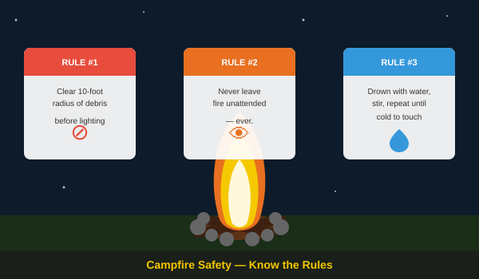

Planning Your Trip
Preparing for your first wilderness outing doesn't have to be overwhelming. Successful planning begins with choosing the right campsite near your local region that fits your comfort level, researching appropriate weather expectations, and verifying accurate reservation dates ahead of your arrival.
Always establish a physical packing checklist containing fundamental supplies to prevent leaving crucial gear items at home. Checking regional storm forecasts right up to your departure morning guarantees you won't get caught unprepared by changing wilderness patterns.

Safety Basics & Campsite Setup
Arrive early during daylight hours to safely configure your living compound layout before darkness sets in. Clear your immediate ground footprint of hard debris and structural roots prior to raising your tent structure to keep structural fabric safe from floor punctures. Position sleeping pad coordinates safely away from slope paths to keep rainwater runoff from sliding underneath you.
Fire governance demands severe focus. Construct campfires strictly inside designated iron fire rings, clearing away a safe ten-foot perimeter of comedic twigs or leaves nearby. Never leave open flame sources unmonitored for any duration. When putting out live coals, continuously drown the remaining structure completely with water, stir through warm ashes thoroughly, and repeat the process until the surface is cold to your physical touch.

Leave No Trace
Preserving the pristine layout of state parks ensures these zones remain beautiful for future years. Pack out every scrap of plastic or organic food waste you generate during your trip. Never feed wild animals; maintain ethical boundaries and safe observation distances when viewing forest fauna. Stick directly to mapped trail markings to safeguard sensitive wild flora systems from foot damage.